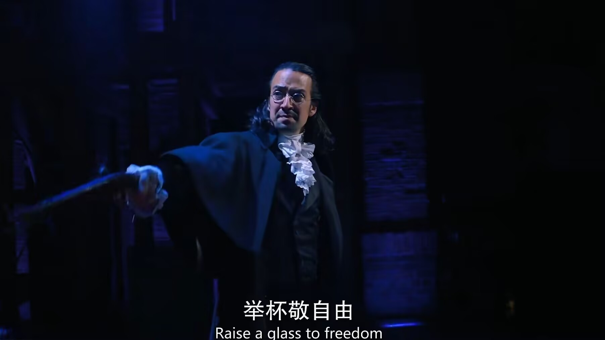

1755年左右，亚历山大·汉密尔顿出生于加勒比海的尼维斯岛，出身贫寒，后母亲去世，他努力来到纽约国王学院接受教育。
1776年，汉密尔顿在纽约结识了阿伦·伯尔、约翰·劳伦斯、拉法耶特侯爵、赫拉克勒斯·穆里根等人，他们的世界观和抱负各有不同，汉密尔顿的雄心壮志与伯尔的谨慎小心形成鲜明对比， 但他们都关注着美国的未来，几人共同立下革命目标。
美国独立战争爆发后，汉密尔顿怀着对自由和国家独立的强烈渴望，志愿加入美国民兵，凭借自身才能得到乔治·华盛顿的赏识，成为其副手。
在菲利普·斯凯勒举办的冬季舞会上，汉密尔顿结识并爱上了伊莉莎·斯凯勒，二人结为夫妻，而伊莉莎的姐姐安杰莉卡也对汉密尔顿怀有感情，但为了妹妹的幸福选择退出。
汉密尔顿因华盛顿未给予其战场指挥权而感到沮丧，后在好友劳伦斯与查尔斯·李的决斗中助其一臂之力，却因此被华盛顿暂时停职，回到家中的他得知妻子伊莉莎怀孕。
拉法耶特说服法国支持美国后，华盛顿召回汉密尔顿参与约克镇战役，汉密尔顿在战役中发挥重要作用，与拉法耶特等共同击败英军，为美国独立战争的胜利做出重要贡献。
战争结束后，汉密尔顿的儿子菲利普出生，伯尔也有了女儿西奥多西娅，两人都对子女寄予厚望。同时，汉密尔顿收到好友劳伦斯战死的消息，悲痛万分。
汉密尔顿与他人共同撰写了《联邦党人文集》，推动宪法的批准。随后，华盛顿当选总统，任命汉密尔顿为美国第一任财政部长，他开始大力推动美国的金融体系建设，提出建立国家银行、发行国债等重要经济政策。
托马斯·杰斐逊从法国归来担任国务卿，他与汉密尔顿在政治理念和政策主张上存在严重分歧，双方就国家经济发展方向等问题展开激烈辩论和斗争，如在是否建立国家银行等问题上争执不下。

汉密尔顿陷入与玛利亚·雷诺兹的桃色丑闻，被其丈夫以此要挟，这一事件成为他政治生涯中的污点，也被政敌利用来攻击他，这一事件也对他的家庭产生了冲击，妻子伊莉莎得知后深受伤害，焚毁了他们曾经交往时的信件，坚决让研究历史的人们无法窥探她的心情。
汉密尔顿的长子菲利普在一场决斗中不幸丧生。当时，菲利普因维护父亲的名誉与人发生冲突，而汉密尔顿并未制止反而鼓励，最终在决斗中受伤身亡。这一悲剧对汉密尔顿夫妇打击巨大，伊莉莎陷入了极度的悲痛之中，汉密尔顿也陷入了深深的自责和痛苦，他意识到自己的行为和名声给家人带来了巨大的伤害。
儿子的离世使汉密尔顿与伊莉莎的关系经历了巨大的考验，但也让他们更加珍惜彼此。伊莉莎在经历了痛苦的挣扎后，最终还是选择与汉密尔顿共同面对生活的苦难，她对汉密尔顿的感情也在这一过程中变得更加深厚和坚定。儿子的去世让汉密尔顿开始重新审视自己的人生和价值观，他更加深刻地认识到家庭的重要性，也对自己过去为了追求政治理想而忽视家庭的行为感到懊悔，这一事件成为了他人生的一个重要转折点，促使他在之后的日子里更加注重家庭和亲情。
在第三届总统选举中，汉密尔顿未支持伯尔，反而支持杰斐逊，导致伯尔对他怀恨在心。此后，两人的矛盾不断升级，最终决定通过决斗来解决争端。
1804年，汉密尔顿与伯尔进行决斗，因汉密尔顿的基督教信仰，他在决斗中故意将手枪高高举起，放弃开枪机会，而伯尔则开枪命中汉密尔顿的右胸，致其次日丧生。